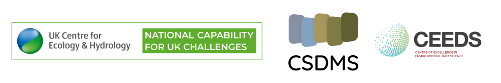

Euro-CSDMS workshop
What does the next generation of environmental models look like?
28-31 October 2024
Rydal Hall, Lake District, UK
Overview
Join us in the beautiful English Lake District, a UNESCO World Heritage site, for a four day immersive retreat envisioning the future models of the natural world.
Environmental models and software are essential tools for understanding the complex interactions of the natural world. They empower us to foresee potential futures, unravel intricate trends and expand our scientific knowledge, ensuring we make informed decisions for a sustainable future. To achieve accurate, efficient, collaborative and integrative insights that offer a holistic understanding, it is imperative that our models and software keep pace with both scientific and technological advances. But often, our models follow programming paradigms and technological setups that have persisted for decades. This not only challenges their effectiveness in generating cutting-edge predictions of the natural world, but also presents an exciting opportunity for innovation - to wipe the slate clean and boldly reimagine, from the ground up, "what should the next generation of environmental models look like?"
This question forms the backdrop to our retreat. Set in the English Lake District over four days, it will encompass a variety of seminars, show-and-tell sessions and educational activities, all focussing on the latest advances in software tools enabling predictions of the natural world. The culmination of the retreat will be an interactive workshop where we directly tackle our question, outlining not just what the next generation of environmental models look like, but the roadmap to enable us to achieve this vision.
Transdisciplinary collaboration will be crucial to realise this vision, and as such, anyone involved in making predictions of the natural world is encouraged to attend - from geologists to climatologists, from data scientists to process-based modellers, and from research software engineers to domain specialists. Cross-sectoral representation is a key element to this, and we welcome stakeholders from all sectors, including academia, industry, non-governmental organisations, consultancies and government.

Topics
During the event, we will reflect on important topics including, but not limited to:
- Digital twins and modelling as a learning process, including the need for stronger integration between process-based models, data science methods and observation data
- Integrated modelling platforms and software tools to help model coupling
- Underpinning software engineering and architecture, including microservice architectures and models as a service
- Scalability, performance optimisation and cloud-based opportunities: How next-generation models will tackle growing data and computational demands
- Collaborative platforms for model and software development
- The role of citizen science data in next-generation models
- The importance of FAIR research software and data
- Environmental sustainability of computing
- Ethical considerations in environmental modelling (bias, fairness, accessibility, etc)
- The impact of AI on modelling paradigms
This list of topics is open to contributions, and we encourage participants to let us know what they would like to see discussed.
Indicative agenda
The final agenda is still in development, but here is a preliminary agenda to give you a flavour of what the retreat will encompass.
| When | What |
|---|---|
| Monday lunchtime | Arrival |
| Monday afternoon | Introductions, seminars and scientific speed dating |
| Tuesday morning and early afternoon | Seminars, show-and-tell and tutorial sessions |
| Tuesday late afternoon | Excursion - to be decided |
| Wednesday | Interactive workshop |
| Thursday morning | Interactive workshop wrap-up and closing session |
There will be plenty of time for interaction, reflection and getting to know each other, all enhanced by the wonderful grounds and surrounding scenery of Rydal Hall.


Who are the organisers?
The retreat is being organised as a collaboration between the
UK Centre for Ecology & Hydrology
and the Community Surface Dynamics Modeling System (CSDMS)
as a Euro-CSDMS workshop - a European version of the CSDMS Annual Meetings. Funding has been
provided by the Natural Environment Research Council's Global Partnerships Seedcorn Fund, as part of a collaboration
encompassing UKCEH, CSDMS, TU Delft, Netherlands eScience Center, Plymouth Marine Laboratory and University of
Massachusetts Dartmouth.

Get in touch
Sam Harrison is the main organiser, who can be contacted at sharrison@ceh.ac.uk.
© 2024 UKCEH, licensed under CC BY 4.0. Design: HTML5 UP.
Header image created with Microsoft Designer. Other images courtesy of Unsplash.
Header image created with Microsoft Designer. Other images courtesy of Unsplash.